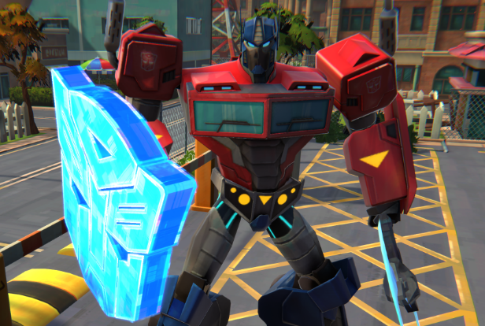

TransformaX
TransformaX je futuristična znanstvenofantastična igra, kjer v vlogi agenta X raziskuješ virtualna okolja, rešuješ kode in se boriš proti sistemski korupciji. Tvoja naloga? Reprogramirati resničnost.
Lastnosti igre:
- Edinstven sistem transformacij likov in okolij
- Futuristični svetovi in vizualni efekti
- Napreden zvok in originalna glasba
- Sistem nadgradenj in moči
- Odlična podpora za tipkovnico in krmilnike